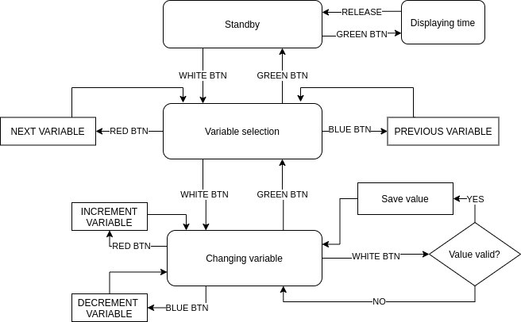

Now I'm ready to think about how the UI should work. To figure out what I need, I decided to first write user stories. I came up with these:
For changing the variables, it was clear that I need two views - one where I can choose the variable I want to change, another where I'm changing the variables. To change the variables I would want to either increment or decrement them. Looks like this can be done with 4 buttons.
This is the rough flow I came up with.
Fairly simple - two looping menu states with linear navigation and a temporary "displaying time" state.
For the variable selection menu, I decided on this variable order: